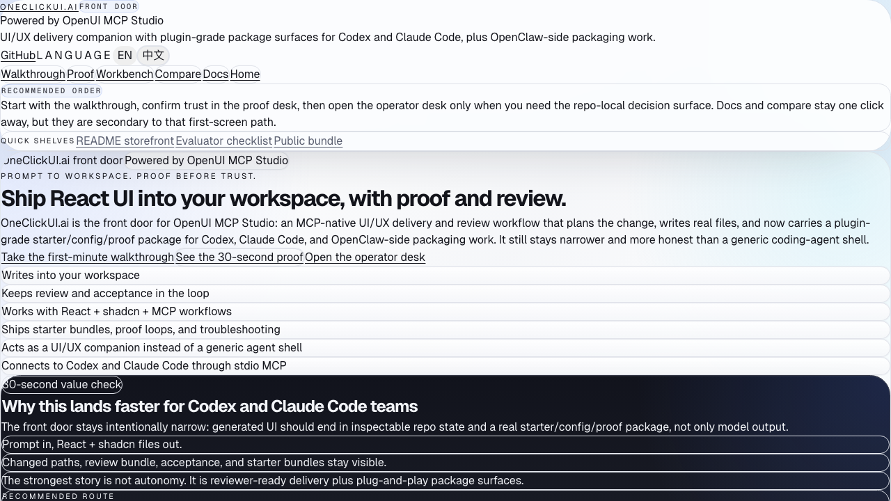

Product
Turn one UI brief into React + shadcn delivery.
Generate files, keep review visible, and carry proof forward before ship.
OpenUI MCP Studio starts with one product sentence, one proof-backed route, and one visible next step before it asks you to care about packaging, descriptors, or marketplace shelves.
Product
Turn one UI brief into React + shadcn delivery.
Generate files, keep review visible, and carry proof forward before ship.
First route
Front door -> proof desk -> demo:ship.
Start with the repo-owned route before branching into metadata or install shelves.
Why trust it
One real proof lane beats a shelf of claims.
The repo shows a proof surface, a demo command, and quality gates instead of stopping at a screenshot.
Boundary
Not a hosted SaaS, and not a generic agent shell.
`OneClickUI.ai` is the short front-door label; `OpenUI MCP Studio` stays the technical product name.

Visible proof
The front door should answer what this is, where to start, and why it is trustworthy before brand split, bundle, or registry details take the stage.